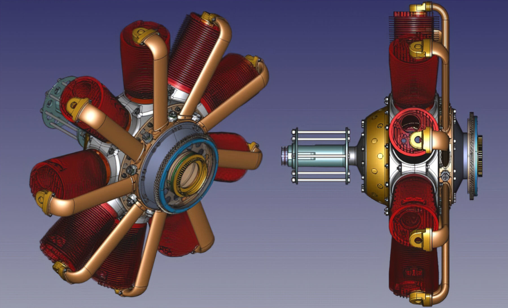
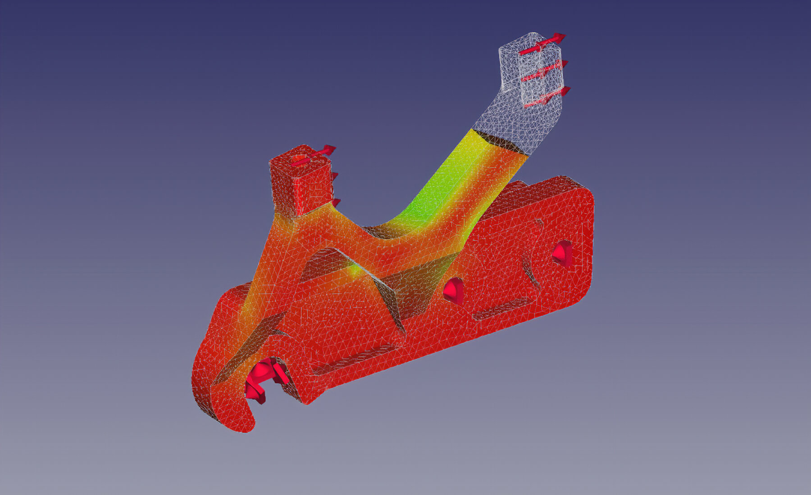
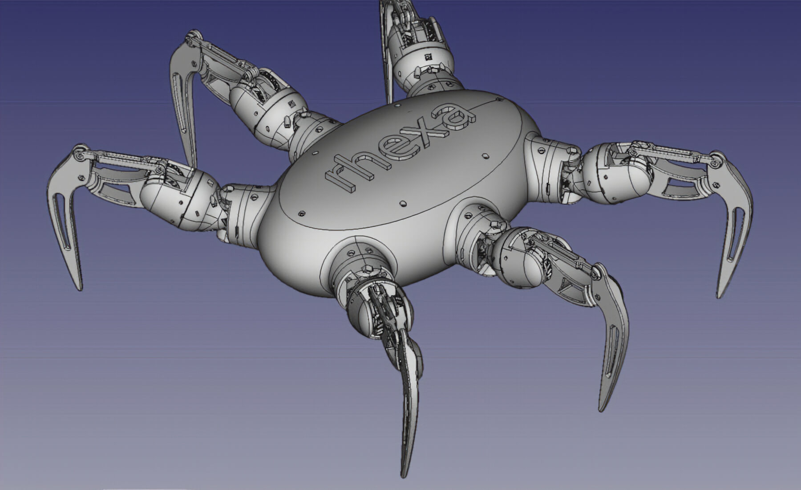

This Portfolio is intended to show, guide and provide you information in different areas such as Web-development, design, manufacturing, analysis, visualization, automatization and some Wine support models to take advantage of Open software.

Mechanical Design
Build your own components with FreeCAD you support Open software. Image Source

Simulations
When you analyze your own components with FreeCAD you support Open software. Image Source

Integration of different areas
Get involved in the FreeCAD community with your own components with FreeCAD and support Open software. Image Source